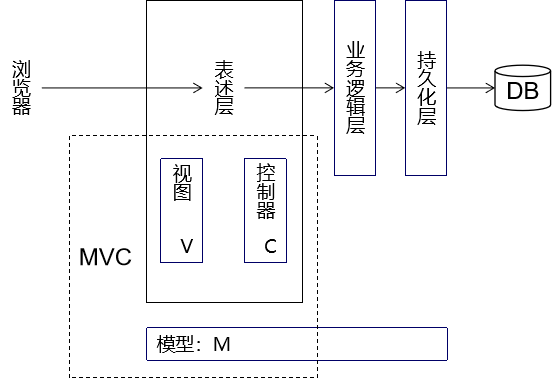

Thymeleaf笔记¶
从三层架构到MVC¶
- MVC理念和三层架构并不矛盾，反而是三层架构的延伸
- MVC专指表述层的设计理念
- MVC理念的核心思想：解耦

从业务功能和三层架构角度看项目网格¶

Thymeleaf搭建环境¶
导入jar包¶
attoparser-2.0.5.RELEASE.jar
javassist-3.20.0-GA.jar
log4j-1.2.15.jar
ognl-3.1.26.jar
slf4j-api-1.7.25.jar
slf4j-log4j12-1.7.25.jar
thymeleaf-3.0.12.RELEASE.jar
unbescape-1.1.6.RELEASE.jar
配置web.xml¶
<!-- 在上下文参数中配置视图前缀和视图后缀 -->
<context-param>
<param-name>view-prefix</param-name>
<param-value>/WEB-INF/view/</param-value>
</context-param>
<context-param>
<param-name>view-suffix</param-name>
<param-value>.html</param-value>
</context-param>
创建ViewBaseServlet¶
import org.thymeleaf.TemplateEngine;
import org.thymeleaf.context.WebContext;
import org.thymeleaf.templatemode.TemplateMode;
import org.thymeleaf.templateresolver.ServletContextTemplateResolver;
import javax.servlet.ServletContext;
import javax.servlet.ServletException;
import javax.servlet.http.HttpServlet;
import javax.servlet.http.HttpServletRequest;
import javax.servlet.http.HttpServletResponse;
import java.io.IOException;
public class ViewBaseServlet extends HttpServlet {
private TemplateEngine templateEngine;
@Override
public void init() throws ServletException {
// 1.获取ServletContext对象
ServletContext servletContext = this.getServletContext();
// 2.创建Thymeleaf解析器对象
ServletContextTemplateResolver templateResolver = new ServletContextTemplateResolver(servletContext);
// 3.给解析器对象设置参数
// ①HTML是默认模式，明确设置是为了代码更容易理解
templateResolver.setTemplateMode(TemplateMode.HTML);
// ②设置前缀
String viewPrefix = servletContext.getInitParameter("view-prefix");
templateResolver.setPrefix(viewPrefix);
// ③设置后缀
String viewSuffix = servletContext.getInitParameter("view-suffix");
templateResolver.setSuffix(viewSuffix);
// ④设置缓存过期时间（毫秒）
templateResolver.setCacheTTLMs(60000L);
// ⑤设置是否缓存
templateResolver.setCacheable(true);
// ⑥设置服务器端编码方式
templateResolver.setCharacterEncoding("utf-8");
// 4.创建模板引擎对象
templateEngine = new TemplateEngine();
// 5.给模板引擎对象设置模板解析器
templateEngine.setTemplateResolver(templateResolver);
}
protected void processTemplate(String templateName, HttpServletRequest req, HttpServletResponse resp) throws IOException {
// 1.设置响应体内容类型和字符集
resp.setContentType("text/html;charset=UTF-8");
// 2.创建WebContext对象
WebContext webContext = new WebContext(req, resp, getServletContext());
// 3.处理模板数据
templateEngine.process(templateName, webContext, resp.getWriter());
}
}
ViewBaseServlet用法¶
- 具体模块下的Servlet继承ViewBaseServlet
- 想要**转发**到某个视图时，调用父类的processTemplate()即可
- 按照习惯，我们通常会将模板视图文件放在WEB-INF目录下，这样就不能直接重定向到模板视图文件。此时我们需要重定向到一个Servlet，然后再通过这个Servlet转发到这个模板视图并渲染。
- 访问项目的首页时，也必须经过Servlet，执行processTemplate()方法，才能够正确解析首页页面上的Thymeleaf元素。
![./images]()
<servlet>
<servlet-name>PortalServlet</servlet-name>
<servlet-class>cn.kirklin.servlet.PortalServlet</servlet-class>
</servlet>
<servlet-mapping>
<servlet-name>PortalServlet</servlet-name>
<url-pattern>/index.html</url-pattern>
</servlet-mapping>
创建ModelBaseServlet¶
这个类和Thymeleaf没有直接关系，我们使用这个基类，是为了避免每处理一个请求就创建一个Servlet。继承了ModelBaseServlet之后，就可以把同一个模块内处理各个请求的方法集中到同一个Servlet中。
public class ModelBaseServlet extends ViewBaseServlet {
protected void doGet(HttpServletRequest request, HttpServletResponse response) throws ServletException, IOException {
// 在doGet()方法中调用doPost()方法，这样就可以在doPost()方法中集中处理所有请求
doPost(request, response);
}
protected void doPost(HttpServletRequest request, HttpServletResponse response) throws ServletException, IOException {
// 0.在所有request.getParameter()前面设置解析请求体的字符集
request.setCharacterEncoding("UTF-8");
// 1.从请求参数中获取method对应的数据
String method = request.getParameter("method");
// 2.通过反射调用method对应的方法
// ①获取Class对象
Class<? extends ModelBaseServlet> clazz = this.getClass();
try {
// ②获取method对应的Method对象
Method methodObject = clazz.getDeclaredMethod(method, HttpServletRequest.class, HttpServletResponse.class);
// ③打开访问权限
methodObject.setAccessible(true);
// ④通过Method对象调用目标方法
methodObject.invoke(this, request, response);
} catch (Exception e) {
e.printStackTrace();
throw new RuntimeException(e);
}
}
}
各个Servlet之间的继承关系¶

Thymeleaf页面th名称空间¶

Thymeleaf语法¶
th:xxx¶
| 属性名 | 作用 |
|---|---|
| th:text | 使用表达式设置文本标签体的数据 |
| th:属性名 | 使用表达式运算得到的值设置HTML属性 |
| th:if/th:unless | 分支判断 |
| th:each | 迭代 |
直接写表达式¶
- 有转义效果：[[${表达式}]]
- 无转义效果：[(${表达式})]
表达式的类型¶
- @{}：给传入的字符串前面附加**『上下文路径』**
- ${}：解析OGNL表达式
OGNL表达式¶
OGNL：Objects-Graph Navigation Language对象图导航语言
起点¶
| 表达式起点描述 | 作用 | 参考 |
|---|---|---|
| 请求域属性名 | 根据属性名从请求域取出数据 | |
| session | 访问session域 | |
| application | 访问application域 | |
| param | 读取请求参数 | |
| #strings | 执行字符串的相关处理 | org.thymeleaf.expression.Strings |
| #lists | 执行集合相关的处理 | org.thymeleaf.expression.Lists |
| #request | 原生的request对象 | |
| #response | 原生的response对象 | |
| #session | 原生的session对象 | |
| #servletContext | 原生的ServletContext对象 |
访问具体属性语法¶
| 对象类型 | 访问方式 |
|---|---|
| 普通对象包含使用getXxx()、setXxx()定义的属性 | 对象.属性名 |
| List集合 | [index] |
| 数组 | [下标] |
| Map集合 | map.key |
| 有方法的对象 | 对象.方法() 对象.方法(参数列表) |
包含代码片段页面¶
声明代码片段¶
<!DOCTYPE html>
<html lang="en" xmlns:th="http://www.thymeleaf.org">
<head>
<meta charset="UTF-8">
<title>Title</title>
</head>
<body>
<!-- 使用th:fragment属性给代码片段命名 -->
<div th:fragment="navigator">
<a href="BookManagerServlet?method=showBookList" class="order">图书管理</a>
<a href="order_manager.html" class="destory">订单管理</a>
<a href="index.html" class="gohome">返回商城</a>
</div>
</body>
</html>
引入代码片段¶
| 引入方式 | 作用 |
|---|---|
| th:insert="segment/admin-navigator :: navigator" | 把目标代码片段整体包含到当前标签内部 |
| th:include="segment/admin-navigator :: navigator" | 把目标代码片段内部的内容包含到当前标签内 |
| th:replace="segment/admin-navigator :: navigator" | 使用目标代码片段替换当前标签 |
segment/admin-navigator代表目标代码片段的逻辑视图。
navigator代表目标代码片段中使用th:fragment指定的名称。
视图名称¶
物理视图¶
能够将请求转发到目标页面时使用的完整路径。
/WEB-INF/view/hello.html
逻辑视图¶
物理视图=前缀+逻辑视图+后缀